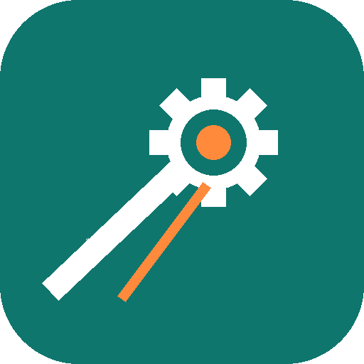

sketch.ino●
Klick auf ✓ zum Prüfen oder ➜ zum Hochladen.

Kometenwerk CodeKlick auf ✓ zum Prüfen oder ➜ zum Hochladen.
Damit du deine Programme prüfen und auf den Arduino laden kannst, braucht das Programm einmal die Arduino-Werkzeuge (Übersetzer und Hochlader, ca. 150 MB). Dafür muss das Internet an sein.